Configuring Single Sign on
Overview
In this section we will configure Red Hat SSO for setting up OIDC authentication for bookinfo APIs being managed in 3scale.
Installing Red Hat SSO
-
Create a keycloak namespace on your OpenShift Cluster. Navigate to Administrator > Project > Create Project. Type
keycloakas the name of the project and create.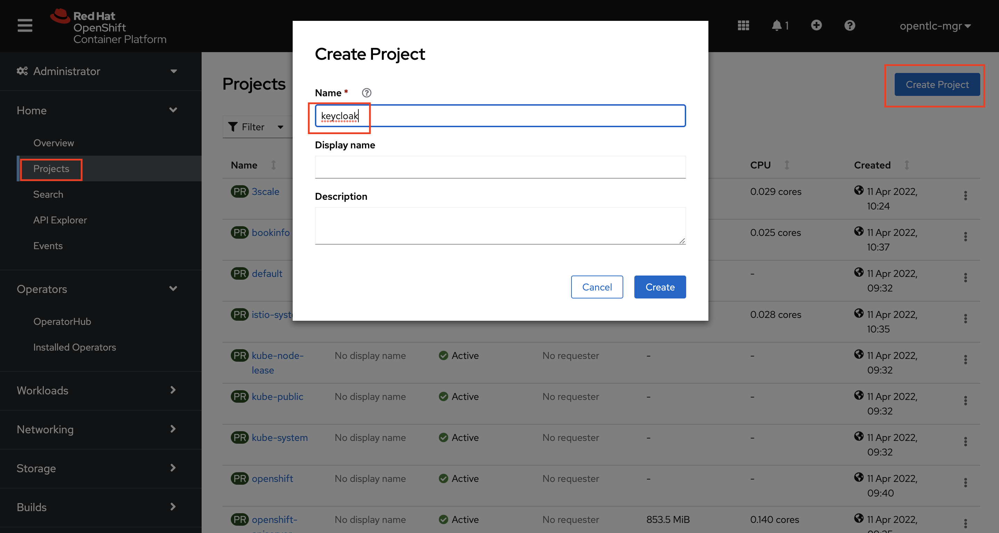 -
On your OpenShift Console UI, navigate to Administrator > Operators > OperatorHub and search for sso. Select the Red Hat Single Sign-On Operator. Double check and make sure you are in the keycloak namespace while you do this
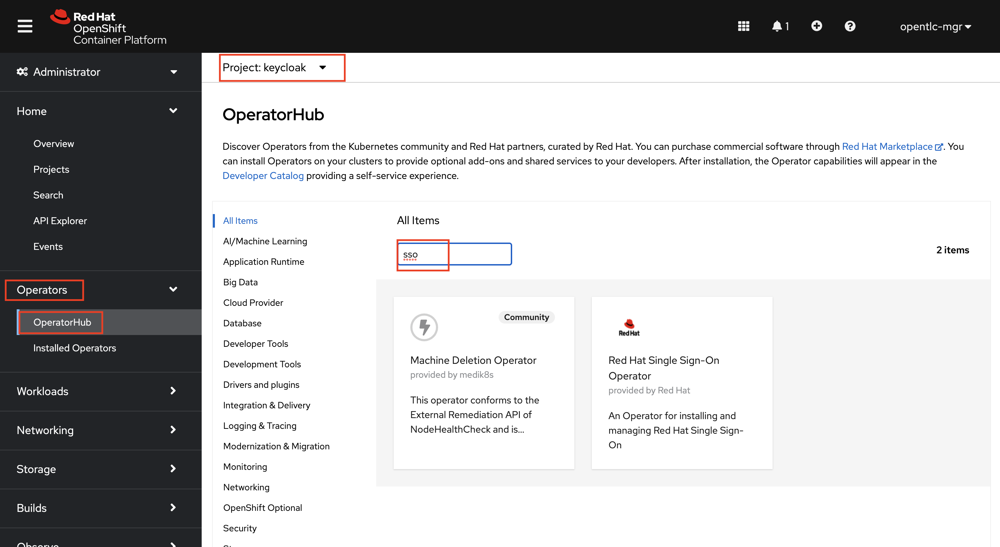 -
Click on Install
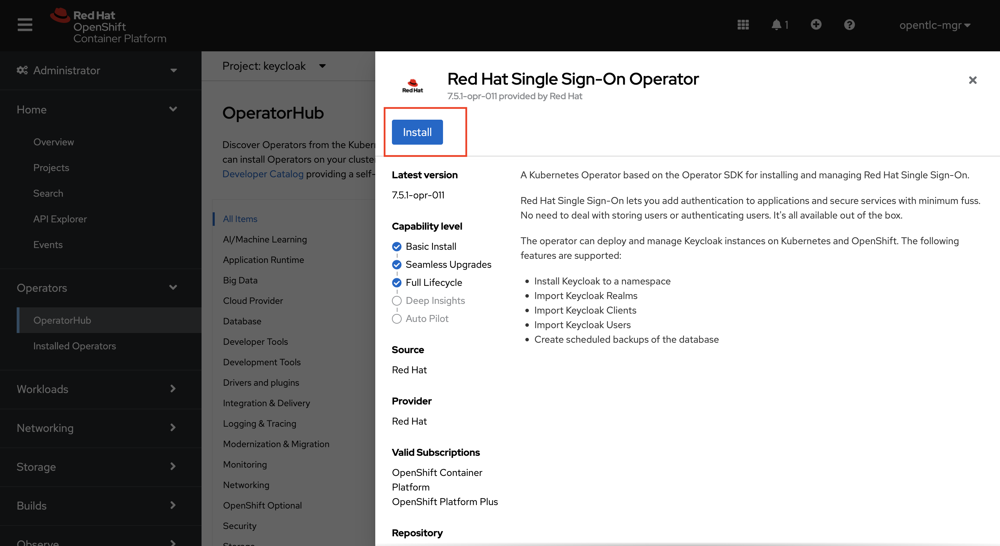 -
Double check and make sure the keycloak namespace is selected. Leave all the options as default and click Install
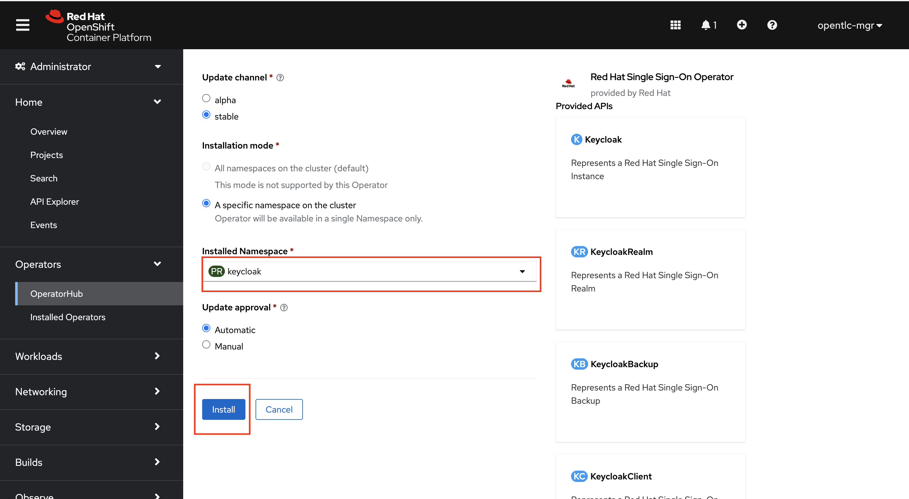 -
Once the installation is complete (will take a few seconds). Click on View Operator
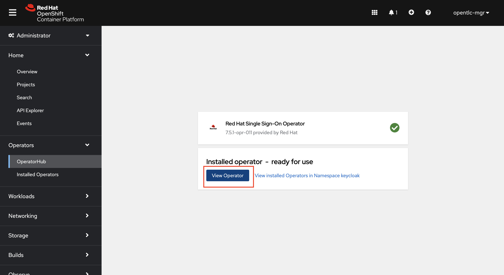 -
Now let’s a Keycloak instance. Click on the Keycloak tab> Create Keycloak > YAML view >. Remove the the existing yaml and copy paste the code provided below
apiVersion: keycloak.org/v1alpha1 kind: Keycloak metadata: name: keycloak labels: app: sso spec: instances: 1 extensions: - https://github.com/aerogear/keycloak-metrics-spi/releases/download/1.0.4/keycloak-metrics-spi-1.0.4.jar externalAccess: enabled: True profile: RHSSO
-
Navigate to Developer > Topology (Make sure you are in the keycloak project). Wait until all the pods are up and running i.e have a solid blue circle around them as shown below:
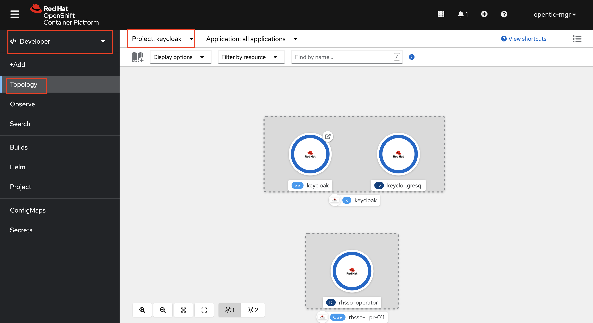
Configuring the Keycloak Realm, Client and User
-
If you haven’t already done so, . Open the terminal on your workstation. SSH into the cluster bastion via the credentials you obtained in your welcome email which should look like the images below

-
Create a Custom Resource Definition file for the keycloak realm with name 'KeycloakRealm_threescale.yaml' using vim or any other editor on the CLI. Copy paste the below yaml into the file and save it.
apiVersion: keycloak.org/v1alpha1 kind: KeycloakRealm metadata: name: threescale labels: app: threescale spec: realm: id: threescale realm: threescale enabled: True displayName: "Red Hat 3scale Realm" instanceSelector: matchLabels: app: sso -
Apply the CRD to your cluster using the below command
oc apply -f KeycloakRealm_threescale.yaml -n keycloak -
Create a Custom Resource Definition file for the keycloak client with name 'KeycloakClient_3scale-zync.yaml' using vim or any other editor on the CLI. Copy paste the below yaml into the file and save it.
apiVersion: keycloak.org/v1alpha1 kind: KeycloakClient metadata: name: 3scale-zync labels: app: threescale spec: client: clientId: 3scale-zync secret: zync-secret clientAuthenticatorType: client-secret protocol: openid-connect directAccessGrantsEnabled: false standardFlowEnabled: false serviceAccountsEnabled: true defaultClientScopes: - email - profiles - roles - web-origins realmSelector: matchLabels: app: threescale -
Apply the CRD to your cluster using the below command
oc apply -f KeycloakClient_3scale-zync.yaml -n keycloak -
Create a Custom Resource Definition file for the keycloak user with name 'KeycloakUser_user1.yaml' using vim or any other editor on the CLI. Copy paste the below yaml into the file and save it.
apiVersion: keycloak.org/v1alpha1 kind: KeycloakUser metadata: name: user1 labels: app: threescale spec: user: username: user1 email: user1@openshift.opentlc.com enabled: true emailVerified : true credentials: - type: password value: openshift clientRoles: account: - manage-account - view-profile realm-management: - manage-clients - manage-users - manage-realm - realm-admin realmSelector: matchLabels: app: threescale -
Apply the CRD to your cluster using the below command
oc apply -f KeycloakUser_user1.yaml -n keycloak
Add service account permissions in Red Hat SSO UI
-
Log into Red Hat SSO UI using the below URL. (Do not forget to replace the cluster wildcard url)
https://keycloak-keycloak.{cluster wildcard url} -
Click on Administration Console

-
You can retrieve the login credentials using the OpenShift Console UI. Select keycloak project and Navigate to Developer > Secrets and search for credential-keycloak
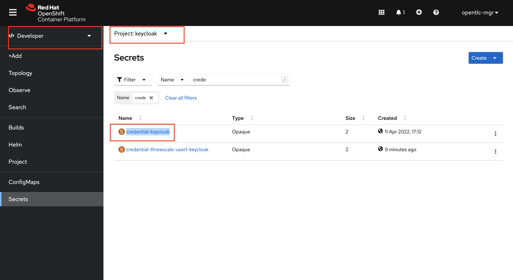 -
From the credential-keycloak secret you can retrieve the admin login username and password Login to the Red Hat SSO admin portal by using the Username and Password
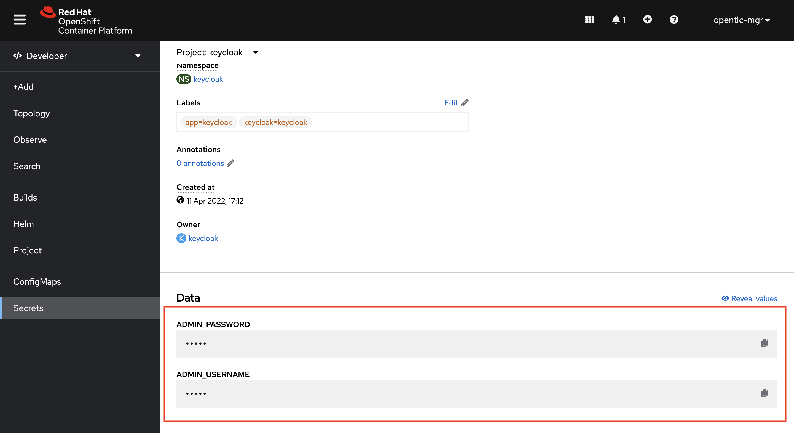 -
Double check to make sure you are in the
Threescalerealm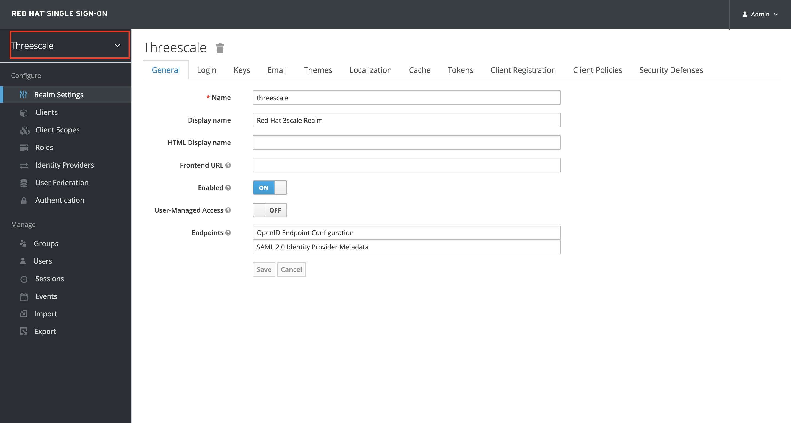 -
Browse to Clients and select the 3scale-zync client
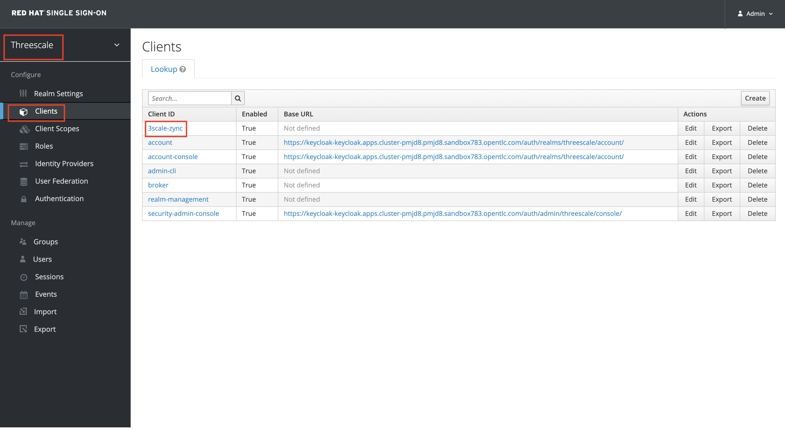 -
Select the Service Account Roles tab
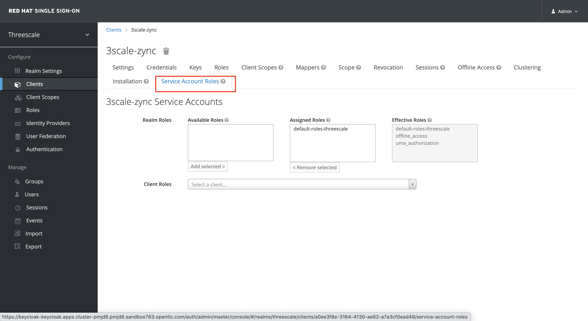 -
Select realm-management from the Client Roles dropdown
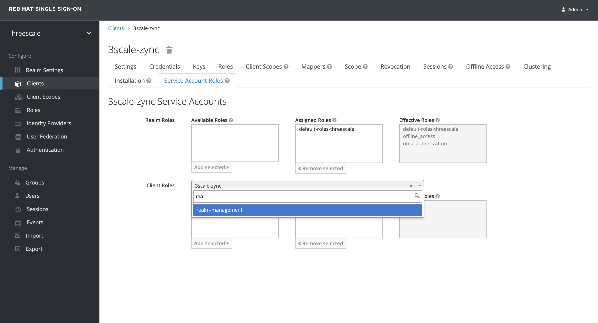 -
Select manage-clients from the Available Roles and Click on Add Selected to add it to Assigned Roles
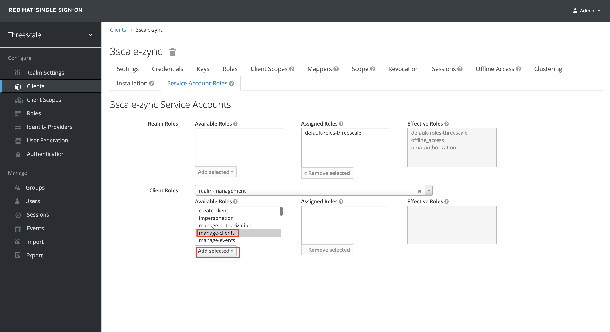
After completion please proceed to next section: Configuring 3scale for OIDC